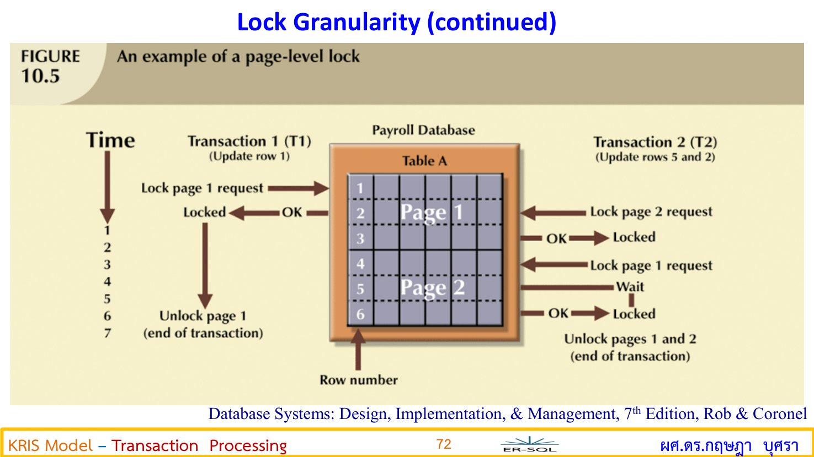
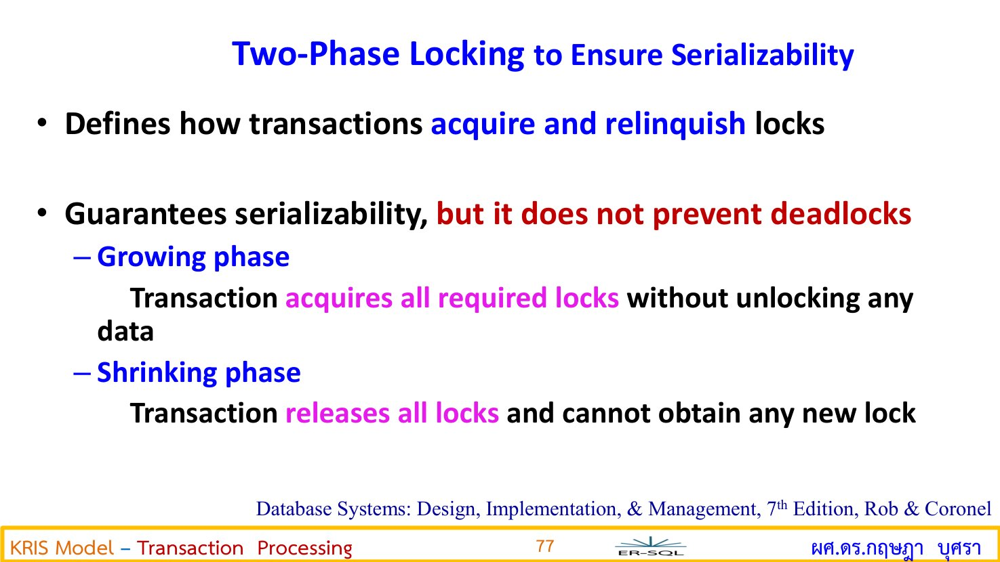

หน้าแรก / Transaction Processing / Concurrency Control
🔀 Concurrency Control — คุมหลาย Transaction ที่ทำงานพร้อมกัน
1. Concurrency Control คืออะไร ทำไมจึงต้องมี
Concurrency Control คือ กลไกของ DBMS ในการจัดลำดับและควบคุมการทำงานของ หลาย Transaction ที่เข้ามาทำงานพร้อมกันในเวลาเดียว (Concurrent Transactions) ให้ได้ผลลัพธ์ถูกต้องเสมอ
🎯 Serializability
ผู้ใช้ส่งงานเข้ามาขนานกัน แต่ DBMS ต้องจัดให้ผลลัพธ์เหมือนทำทีละตัวตามลำดับ (Serial Execution)
🛡️ รักษา I + C ใน ACID
ป้องกัน Transaction หนึ่งไปยุ่งข้อมูลกลางคัน (ยังไม่ Commit) ของอีกตัว
👥 รองรับผู้ใช้เยอะพร้อมกัน
ระบบจองตั๋วหนัง ลงทะเบียนเรียน โอนเงิน — มีคนเข้าพร้อมกันร้อยคนได้โดยข้อมูลไม่พัง
🔍 เปรียบเทียบให้เห็นภาพ
เหมือนธนาคารที่มีลูกค้า 100 คนเดินเข้ามาพร้อมกัน — ถ้าทุกคนวิ่งไปกระทบยอดบัญชีเดียวกันพร้อมกัน ตัวเลขจะพังแน่นอน Concurrency Control คือระบบ บัตรคิว + ป้าย "กำลังใช้งาน" ที่ทำให้ทุกคนได้ทำรายการเสร็จสมบูรณ์ และผลรวมท้ายวันถูกต้อง เหมือนเดินคิวทีละคน
2. ปัญหา 4 อย่างเมื่อไม่มี Concurrency Control
❗ ปัญหาที่ 1: Lost Update (สำคัญที่สุด — ออกเดินตารางบ่อย)
Transaction 2 ตัวอ่านค่าเดิมพร้อมกัน แล้วต่างคนต่างเขียนทับ → ผลของตัวแรกสูญหาย
สถานการณ์: บัญชี A = 100 บาท | T1 ฝากเพิ่ม 50 (ควรได้ 130 รวมกับถอน) | T2 ถอน 20
| t | T1 (ฝาก +50) | T2 (ถอน −20) | A ในหน่วยความจำ T1 | A ในหน่วยความจำ T2 | A ใน Database | เกิดอะไรขึ้น |
|---|---|---|---|---|---|---|
| t1 | READ(A) | — | 100 | — | 100 | T1 อ่าน A = 100 |
| t2 | — | READ(A) | 100 | 100 | 100 | T2 อ่านค่าเดิม 100 ไปด้วย |
| t3 | A = A+50 | — | 150 | 100 | 100 | T1 คำนวณได้ 150 |
| t4 | — | A = A−20 | 150 | 80 | 100 | T2 คำนวณได้ 80 |
| t5 | WRITE(A) | — | 150 | 80 | 150 | T1 เขียน 150 ลง DB |
| t6 | — | WRITE(A) | 150 | 80 | 80 ⚠️ | T2 เขียนทับด้วย 80 → Lost Update! |
⚠️ ผลลัพธ์ผิด
ยอดที่ถูกต้องควรเป็น 100 + 50 − 20 = 130 บาท แต่ในฐานข้อมูลเหลือแค่ 80 บาท — เงินฝาก 50 บาทของ T1 "หายไป"
❗ ปัญหาที่ 2: Dirty Read (อ่านข้อมูลสกปรก)
T2 ไปอ่านข้อมูลที่ T1 ยังไม่ Commit แล้ว T1 กลับ Rollback ทิ้ง → T2 ตัดสินใจบนข้อมูลที่ "ไม่เคยมีอยู่จริง" (ข้อมูลสกปรก = Uncommitted Data)
❗ ปัญหาที่ 3: Uncommitted Dependency
เชื่อมโยงกับ Dirty Read — T2 พึ่งพา (หรือแก้ไขต่อ) ค่าที่ T1 ยังไม่ยืนยัน เมื่อ T1 ยกเลิก T2 ก็พังตาม เหมือน ต่อคิวซื้อของตามคนที่ "บอกว่าจะซื้อ" แต่สุดท้ายไม่ซื้อแล้ว
❗ ปัญหาที่ 4: Inconsistent Analysis
T2 อ่านข้อมูลหลายแถวเพื่อสรุปผล (เช่น รวมยอดทุกบัญชี) แต่ระหว่างอ่าน T1 แก้ไขบางแถวไปแล้ว → ยอดสรุปที่ได้ไม่สอดคล้องกัน (บางส่วนก่อนแก้ บางส่วนหลังแก้) เหมือนนับเงินในลิ้นชักไปครึ่งหนึ่ง แล้วมีคนมาหยิบธนบัตรออกไป 1 ใบ แล้วค่อยนับต่อ
3. เทคนิคแก้ปัญหา
3.1 Locking — ล็อกข้อมูลก่อนใช้

📖 Shared Lock (S-Lock)
ล็อกเพื่ออ่าน (READ) — ให้หลาย Transaction ถือพร้อมกันได้ (อ่านพร้อมกันไม่มีปัญหา) แต่ใครก็ตามที่ถืออยู่ ห้ามใครเขียนทับจนกว่าจะปลดล็อก
✍️ Exclusive Lock (X-Lock)
ล็อกเพื่อเขียน/แก้ไข (WRITE, UPDATE, DELETE) — ครองสิทธิ์ผู้เดียว ใครก็ตามที่ถืออยู่ คนอื่นขอ S หรือ X เพิ่มไม่ได้เลย ต้องรอจนปลดล็อก
🔍 เปรียบเทียบให้เห็นภาพ
S-Lock = ห้องสมุด: ทุกคนเข้าไปอ่านหนังสือเล่มเดียวกันพร้อมกันได้ (อ่านไม่ทำให้เนื้อหาเปลี่ยน)
แต่ห้ามใครเอาปากกาไปขีดเขียนแก้
X-Lock = ห้องน้ำสาธารณะ: เข้าคนเดียวแล้วล็อกประตู ใครมาทีหลังต้องรอจนกว่าจะเปิด
| มีอยู่ ↓ / ขอเพิ่ม → | Shared Lock (S) | Exclusive Lock (X) |
|---|---|---|
| Shared Lock (S) | อนุมัติ ✅ | ปฏิเสธ (Wait) ✗ |
| Exclusive Lock (X) | ปฏิเสธ (Wait) ✗ | ปฏิเสธ (Wait) ✗ |
🧠 วิธีจำ
ยอมเฉพาะ S+S (อ่านพร้อมกันได้) ที่เหลือล็อกกันหมด — เพราะ "อ่านพร้อมกันได้ แต่แก้ต้องคนเดียว"
3.2 Two-Phase Locking (2PL) — กฎล็อก 2 ระยะ

กฎข้อบังคับการขอ/คืน Lock เพื่อการันตีว่า Schedule เป็น Serializable 100%
flowchart LR G1["Phase 1: Growing (ระยะขยาย)
ขอ Lock เพิ่มได้เรื่อย ๆ 📈
แต่ห้ามคืน Unlock แม้แต่ตัวเดียว"] G2["Phase 2: Shrinking (ระยะหด)
คืน Lock ได้เรื่อย ๆ 📉
แต่ห้ามขอเพิ่มอีกเด็ดขาด"] G1 -->|"คืน Lock ตัวแรก = เปลี่ยนเฟส
เกิดได้ครั้งเดียว ไม่มีย้อนกลับ"| G2
ภาพที่ 4: 2PL — ขอได้อย่างเดียว → คืนได้อย่างเดียว เปลี่ยนเฟสครั้งเดียวไม่มีย้อนกลับ
3.3 Timestamp Ordering — ตัดสินด้วยตราเวลา
- ทุก Transaction ได้รับ Timestamp (TS) ตอนเริ่มงาน — มาก่อนได้ TS น้อยกว่า (แก่กว่า)
- เมื่อเกิดขัดแย้ง: ตัวเก่ากว่า (TS น้อย) ขอก่อน → ได้สิทธิ์
- ตัวใหม่กว่า (TS มาก) ทำรายการขัดแย้งกับตัวเก่า → ถูก Abort แล้ว Restart ใหม่พร้อม TS ใหม่
3.4 Deadlock — สภาวะติดหล่ม
เกิดเมื่อ Transaction 2 ตัวขึ้นไป ต่างถือ Lock และต่างรอ Lock ของกันและกันเป็นวงวน (Circular Wait) จนระบบค้าง
flowchart LR T1["T1
ถือ Lock A ✋ รอ Lock B ⏳"] T2["T2
ถือ Lock B ✋ รอ Lock A ⏳"] A["🗄️ ข้อมูล A"] B["🗄️ ข้อมูล B"] T1 -->|"ถือ"| A T2 -->|"ถือ"| B T1 -.->|"รอ"| B T2 -.->|"รอ"| A
ภาพที่ 5: Deadlock — T1 ถือ A รอ B / T2 ถือ B รอ A เกิด Circular Wait รอกันเป็นวงวน ไม่มีใครขยับ!
🔍 เปรียบเทียบให้เห็นภาพ
เหมือนสองคนเจอกันกลางสะพานแคบ — คน A ถือของใหญ่ไม่ยอมถอย คน B ก็ถือของใหญ่ไม่ยอมถอย ต่างคนต่างรอให้อีกฝ่ายถอยก่อน สุดท้ายตันกันทั้งสะพาน วิธีแก้คือต้องมี "ผู้ตัดสิน" สั่งให้ใครคนหนึ่งยอมถอย (Abort)
วิธีแก้ Deadlock
🛡️ Deadlock Prevention (ป้องกันล่วงหน้า — ใช้ Timestamp)
Wait-Die: ตัวเก่า (TS น้อย) ขอข้อมูลที่ตัวใหม่ถือ → ตัวเก่ารอ (Wait);
ตัวใหม่ขอที่ตัวเก่าถือ → ตัวใหม่ตายทันที (Die/Abort)
Wound-Wait: ตัวเก่าขอที่ตัวใหม่ถือ → ตัวเก่าแย่ง (Wound — สั่ง Abort ตัวใหม่);
ตัวใหม่ขอที่ตัวเก่าถือ → ตัวใหม่รอ (Wait)
🔍 Deadlock Detection & Recovery (ตรวจจับแล้วแก้)
DBMS วาด Wait-For Graph (WFG) — จุด = Transaction, ลูกศร = รอ — ถ้าเจอ วงวน (Cycle) = เจอ Deadlock → เลือก Victim (เหยื่อ) 1 ตัว เพื่อ Abort/Rollback ปลด Lock ทั้งหมด ให้อีกตัวทำงานต่อจนจบ
🧠 วิธีจำ Wait-Die vs Wound-Wait
จำจากตัวเก่าเป็นศูนย์กลาง: เก่าขอใหม่ → Wait-Die: เก่ารอ / Wound-Wait: เก่าแย่ง
(เก่า = ผู้ใหญ่: สโลแกน "ผู้ใหญ่หลังยืดหยุ่นกว่า" — อย่าสลับ)
📌 โจทย์เดินเต็มสเต็ป: T1+T2 ทำงานพร้อมกัน แบบมี Lock (2PL)
สถานการณ์เดียวกับ Lost Update ข้างบน (A = 100, T1 ฝาก +50, T2 ถอน −20) แต่คราวนี้เปิดระบบ Lock
| t | T1 | T2 | สถานะ Lock บน A | ผลลัพธ์ / การประมวลผล |
|---|---|---|---|---|
| t1 | LOCK-X(A) | — | Locked by T1 | T1 ขอ X-Lock สำเร็จ |
| t2 | READ(A) | — | Locked by T1 | T1 อ่านได้ A = 100 |
| t3 | A = A+50 | LOCK-X(A) | Locked by T1 | T2 ขอ X-Lock ไม่สำเร็จ → ต้อง Wait ⏳ |
| t4 | WRITE(A) | (รออยู่) | Locked by T1 | T1 เขียน A = 150 ลง DB |
| t5 | UNLOCK(A) | (รออยู่) | Free | T1 คืน Lock → T2 ได้ X-Lock ทันที |
| t6 | — | READ(A) | Locked by T2 | T2 อ่านค่าล่าสุด A = 150 |
| t7 | — | A = A−20 | Locked by T2 | T2 คำนวณ 150 − 20 = 130 |
| t8 | — | WRITE(A) | Locked by T2 | T2 เขียน A = 130 ลง DB |
| t9 | — | UNLOCK(A) | Free | T2 ปลดล็อก เสร็จสิ้นถูกต้อง ✅ |
✅ สรุปผล
เมื่อใช้ Locking (2PL) ปัญหา Lost Update ถูกกำจัด — ฐานข้อมูลจบที่ค่าถูกต้อง 130 บาท เพราะ T2 ต้องรอจน T1 จบแล้วจึงอ่านค่าล่าสุดเสมอ
📝 สูตรเดินตาราง schedule ในข้อสอบ
- วาดคอลัมน์: เวลา t / T1 / T2 / สถานะ Lock / ค่าใน DB
- ไล่ตามลำดับที่โจทย์ให้ ทีละแถว: ใครขอ Lock ก่อนได้ก่อน (First-Come-First-Served)
- ถ้าใครขอ Lock ที่ขัดกัน → เขียนว่า WAIT แล้วค้างไว้ จนกว่าเจ้าของเดิม UNLOCK
- ทุกครั้งที่ READ ให้เขียนค่าล่าสุดใน DB ลงหน่วยความจำของตัวนั้น
- ตอบท้ายด้วย: ค่าสุดท้ายใน DB = ? และเกิดปัญหาอะไร (หรือแก้ปัญหาอะไรได้)
🧪 จำลองกระดาษข้อสอบ — เดิน Schedule (ปี 67 ออก 2 ข้อใหญ่!)
ข้อนี้ให้มา 2 ชิ้นคงที่: ตารางเวลา (T1 สลับ T2 ทีละ action) + ชุดคำถาม — ต้องตอบด้วยการเดินตารางครบทุกแถว พร้อมเขียน "ค่าที่อ่านได้" ทุกครั้ง หน้านี้มีตัวอย่างบัญชี A=100 ไว้แล้ว ตรงนี้ซ้อมด้วยโจทย์ใหม่ 2 ชุด
ชุดที่ 1: โจทย์เดิน schedule จับ Lost Update
📄 โจทย์จำลอง — สต็อกสินค้า X = 100 ชิ้น
T1 ขายออก 10 ชิ้น (คำนวณ X = X−10) • T2 ขายออก 5 ชิ้น (คำนวณ X = X−5) — ทำงานพร้อมกันได้ schedule ดังนี้:
| t | T1 | T2 | ค่า X ใน DB |
|---|---|---|---|
| t1 | READ(X) → ได้ 100 | — | 100 |
| t2 | — | READ(X) → ได้ 100 | 100 |
| t3 | X = 100 − 10 | — | 100 |
| t4 | — | X = 100 − 5 | 100 |
| t5 | WRITE(X) = 90 | — | 90 |
| t6 | — | WRITE(X) = 95 | 95 ❌ |
คำถาม: (1) ค่าสุดท้ายของ X เท่าไหร่? (2) เกิดปัญหาอะไร เพราะอะไร? (3) ถ้าทำแบบ Serial (ทีละตัว) ค่าควรเป็นเท่าไหร่?
ดูเฉลยชุดที่ 1 — เดินสองตารางเทียบกัน
(1) ค่าสุดท้าย = 95 — ดูแถว t6 เป็นหลัก: T2 เขียนทับหลังสุด
(2) ปัญหา = Lost Update — T2 อ่านค่าเก่า 100 ตั้งแต่ t2 แล้วเอาไปคำนวณต่อ ไม่รู้ว่า T1 แก้เป็น 90 ไปแล้ว → เขียน 95 ทับ → การขาย 10 ชิ้นของ T1 ระเหยหายไป (จาก 100 ควรเหลือ 85 แต่เหลือ 95)
(3) Serial ทั้งสองลำดับให้ 85 เท่ากัน:
| ลำดับ | เดินผล | X สุดท้าย |
|---|---|---|
| T1 ก่อน → T2 | 100 − 10 = 90 แล้ว 90 − 5 = 85 | 85 ✅ |
| T2 ก่อน → T1 | 100 − 5 = 95 แล้ว 95 − 10 = 85 | 85 ✅ |
ข้อสังเกตที่ใช้ตอบคะแนน: schedule นี้ผลต่างจาก Serial ทั้งสองทาง จึงไม่ Serializable และเสีย Consistency — วิธีแก้: เปิด X-Lock ตามกฎ 2PL เหมือนโจทย์เดินเต็มสเต็ปด้านบน → T2 ต้อง WAIT ที่ t3 จน T1 UNLOCK ที่ t5 จึงอ่านค่า 90 ต่อ → จบที่ 85 ถูกต้อง ✅
ชุดที่ 2: โจทย์ Deadlock + Wait-Die / Wound-Wait
📄 โจทย์จำลอง — T1 กับ T2 ยึดข้อมูลคนละตัว
| t | T1 | T2 |
|---|---|---|
| t1 | LOCK-X(A) สำเร็จ | — |
| t2 | — | LOCK-X(B) สำเร็จ |
| t3 | ขอ LOCK-X(B) → ถูก T2 ถืออยู่ → WAIT ⏳ | — |
| t4 | (รออยู่) | ขอ LOCK-X(A) → ถูก T1 ถืออยู่ → WAIT ⏳ |
คำถาม: (1) เกิดอะไรขึ้นตรงจุดไหน? (2) เขียน Wait-For Graph (3) ถ้าแก้ด้วยเกณฑ์ Timestamp โดย T1 เก่ากว่า T2 (Ts(T1) < Ts(T2)) — ใครถูก Abort ทั้งแบบ Wait-Die และ Wound-Wait?
ดูเฉลยชุดที่ 2 — วงกลม + สูตรจำ 2 แบบ
(1) จาก t4 เป็นต้นไป: T1 ถือ A รอ B / T2 ถือ B รอ A — รอซึ่งกันและกันเป็นวงวน (Circular Wait) = Deadlock ค้างชะงักถาวร ไม่มีใครเดินต่อ
(2) Wait-For Graph: T1 → T2 (T1 รอ T2 ปลด B) และ T2 → T1 (T2 รอ T1 ปลด A) — เส้นสร้างวงกลม T1→T2→T1 เมื่อมี Cycle = มี Deadlock (อาจารย์เรียก Deadly Embrace)
(3) เกณฑ์ Timestamp — T1 เก่ากว่า (Ts(T1) < Ts(T2)):
| สูตร | จำง่าย | เกิดอะไรกับ T1 (เก่า) ขอ Lock ที่ T2 ถือ | เกิดอะไรกับ T2 (ใหม่) ขอ Lock ที่ T1 ถือ |
|---|---|---|---|
| Wait-Die | "เก่ารอ ใหม่ตาย" | เก่า → WAIT (รอได้) | ใหม่ → DIE (ถูก Abort + Restart) |
| Wound-Wait | "เก่าขับ ใหม่รอ" | เก่า → WOUND (บังคับ Abort T2 แล้วได้ B ทันที) | ใหม่ → WAIT (รอได้) |
ทั้งสองสูตรพาให้วงกลมแตก (ตัวใดตัวหนึ่ง Abort → ปลด Lock ให้อีกตัวเดินต่อ) — ข้อดีคือ Deadlock ไม่เกิดขึ้นเลย เพราะตัดสินตั้งแต่ยังขอ Lock (Prevention) ไม่ต้องรอตรวจพบทีหลัง
เกณฑ์ให้คะแนนข้อ Concurrency — ตารางตรวจก่อนส่ง
| องค์ประกอบคำตอบ | น้ำหนัก | เช็กลิสต์ |
|---|---|---|
| เดิน schedule ครบทุกแถวพร้อมค่า | ~3 | ทุก READ ต้องเขียน "ได้ค่าเท่าไหร่" ทุก WRITE เขียนค่าที่ตั้งใจ |
| ระบุปัญหาเป๊ะ + เหตุผล | ~3 | Lost Update / Dirty Read / Deadlock — ชี้แถวก่อเหตุด้วย (เช่น "T2 อ่านค่าเก่าที่ t2") |
| เทียบ Serial / ผลที่ถูกต้อง | ~2 | เดินให้ครบทั้งสองลำดับถ้าคำนวณสลับทางได้ |
| Lock / Wait-For Graph / เกณฑ์ Timestamp ถูก | ~2-3 | เขียน WAIT ชัดทุกจุดที่ Lock ชน • Graph มีวงกลม = Deadlock |
🚨 ข้อผิดพลาดที่หักคะแนนทันที
1) เดิน schedule แต่ไม่เขียนค่าที่อ่านได้แต่ละแถว — หลักฐานหาย อาจารย์ให้ครึ่งเดียว 2) ลืมเขียน "WAIT ⏳" ตรงจุดที่ Lock ชน 3) ตอบ Deadlock ทั้งที่รอเป็นเส้นตรง (ไม่มีวงกลม) — Deadlock ต้องมี Cycle เท่านั้น 4) สลับสูตร: Wait-Die ตามให้ตัวเก่า "ตาย" (จริง ๆ เก่ารอ) / Wound-Wait ตอม่อให้เก่า "รอ" (จริง ๆ เก่าขับ)
📝 แนวข้อสอบ Concurrency + ตัวอย่างคำตอบ
ข้อ 1: Concurrency Control คืออะไร พร้อมตัวอย่าง
Concurrency Control คือ กลไกของ DBMS ที่ควบคุมการประมวลผลของหลาย Transaction ที่ทำงานพร้อมกัน ให้ได้ผลลัพธ์ถูกต้องเสมือนทำงานทีละตัวตามลำดับ (Serializable) เพื่อรักษาคุณสมบัติ Isolation และ Consistency — ตัวอย่าง: ระบบจองตั๋วหนังที่มีผู้ใช้จองที่นั่งเดียวกันพร้อมกัน ระบบต้องใช้ Lock กันไม่ให้ขายที่นั่งเดิมให้สองคน
ข้อ 2: Lost Update คืออะไร ยกตัวอย่างพร้อมวิธีแก้
Lost Update คือ ปัญหาที่ Transaction 2 ตัวอ่านค่าเดิมพร้อมกัน แล้วเขียนทับกัน ทำให้การอัปเดตของตัวแรกสูญหาย —
ตัวอย่าง: A = 100, T1 ฝาก 50, T2 ถอน 20 อ่านพร้อมกันแล้วเขียนทับ ผลจบที่ 80 แทนที่ควรเป็น 130
วิธีแก้: ใช้ Exclusive Lock ตามกฎ Two-Phase Locking — ใครล็อกข้อมูลก่อน อีกตัวต้องรอจนปลดล็อก
ทำให้ตัวหลังอ่านค่าล่าสุดเสมอ
ข้อ 3: อธิบาย Two-Phase Locking (2PL)
2PL คือ กฎการขอ/คืน Lock 2 ระยะเพื่อการันตี Serializability:
Growing Phase — ขอ Lock เพิ่มได้เรื่อย ๆ แต่ห้ามคืนแม้แต่ตัวเดียว
Shrinking Phase — พอคืน Lock ตัวแรกแล้ว คืนได้เรื่อย ๆ แต่ห้ามขอเพิ่มอีกเด็ดขาด
เปลี่ยนเฟสได้ครั้งเดียว ไม่มีย้อนกลับ — ทำให้ผลลัพธ์ของ Schedule เทียบเท่าการทำงานทีละตัว
ข้อ 4: Deadlock เกิดได้อย่างไร และแก้อย่างไร
การเกิด: T1 ถือ Lock ข้อมูล A แล้วรอ Lock ข้อมูล B / T2 ถือ Lock ข้อมูล B แล้วรอ Lock ข้อมูล A
→ เกิดการรอซึ่งกันและกันเป็นวงวน (Circular Wait) ระบบค้างชะงัก
วิธีแก้: (1) Prevention ด้วย Timestamp เช่น Wait-Die / Wound-Wait
(2) Detection & Recovery ด้วย Wait-For Graph หา Cycle แล้วเลือก Victim 1 ตัว Abort เพื่อปลด Lock ให้อีกตัวทำงานต่อ
🎬 ลองทำแบบทดสอบด่วน
Q1Transaction ที่ต้องการแก้ไขข้อมูล (WRITE) ควรขอ Lock แบบใด?
เฉลย ข้อ 2 — เขียน/แก้ไขต้องใช้ X-Lock เพื่อครองสิทธิ์ผู้เดียว กันคนอื่นอ่าน/เขียนพร้อมกัน ส่วน S-Lock ใช้ตอนอ่าน
Q2ข้อใดเป็นข้อห้ามของ Two-Phase Locking?
เฉลย ข้อ 4 — 2PL แบ่งเป็น Growing (ขอได้อย่างเดียว) และ Shrinking (คืนได้อย่างเดียว) เปลี่ยนเฟสได้ครั้งเดียวเมื่อคืน Lock ตัวแรก
Q3T2 อ่านค่าที่ T1 เขียนไว้แต่ยังไม่ Commit แล้ว T1 Rollback — T2 เจอปัญหาอะไร?
เฉลย ข้อ 1 — การอ่านข้อมูลที่ยังไม่ Commit (แล้วถูกยกเลิกทิ้ง) คือ Dirty Read ทำให้ตัดสินใจบนข้อมูลที่ไม่เคยมีอยู่จริง